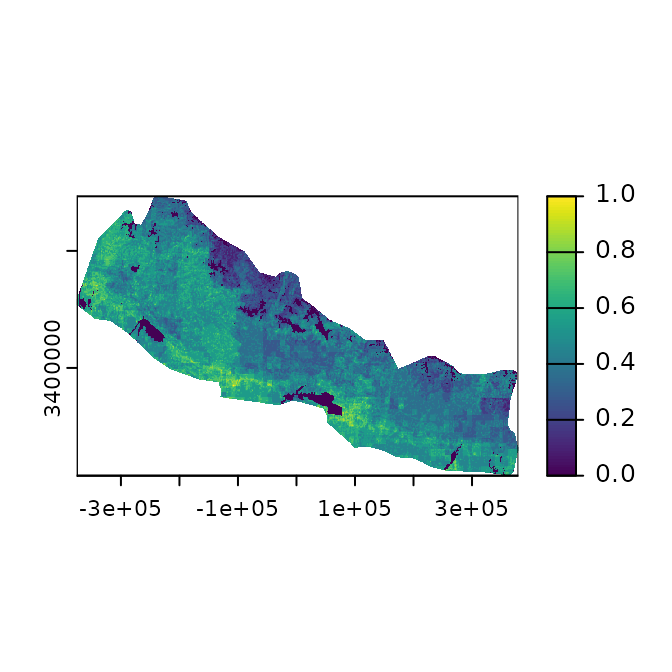
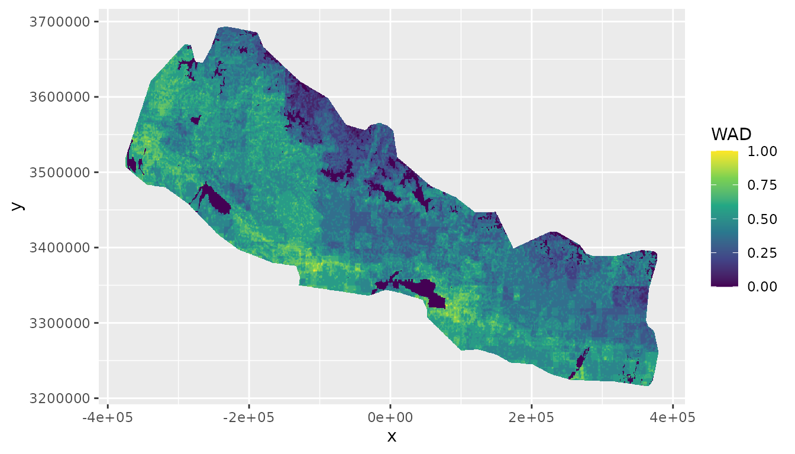
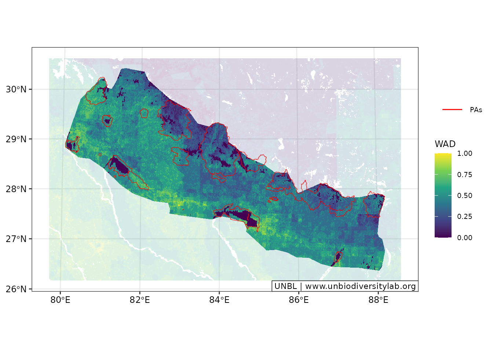
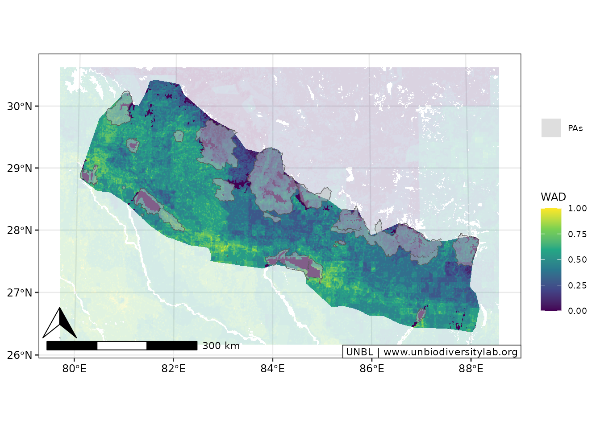

An Example ELSA Workflow
elsaR.RmdOverview
Planning Region
At the start of the analysis, the planning region needs to be defined and planning units need to be created for the planning region. In this example, we use Nepal as our case study to demonstrate the functions within this package.
For this, we first obtain the country boundary of Nepal by using its iso3 string (“NPL”). Normally, you would need to provide your own data set with country boundaries to filter from. Data can be loaded from local machines in vector or raster format, or using a remote connection via postgres using the elsar_load_data() function. Here, we use a pre-saved dataset.
# create boundary for Nepal
boundary <- make_boundary(
boundary_in = boundary_dat,
iso3 = "NPL",
iso3_column = "iso3cd",
custom_projection = FALSE
)
#> [2026-02-20 13:42:38] Creating boundary for planning region...
ggplot() +
geom_sf(data = boundary)The make_boundary() function also provides the option to create a custom projection centred on the planning region. This can also be done in separate steps using the make_custom_projection() function, which is integrated in the make_boundary() function.
boundary_proj <- make_boundary(
boundary_in = boundary_dat,
iso3 = "NPL",
iso3_column = "iso3cd",
custom_projection = TRUE
)
#> [2026-02-20 13:42:38] Creating boundary for planning region...
#> [2026-02-20 13:42:38] Creating custom Mollweide projection centred on planning region...
# create custom projection and apply it to boundary
wkt <- make_custom_projection(boundary = boundary, iso3 = "NPL")
#> [2026-02-20 13:42:38] Creating custom Mollweide projection centred on planning region...
boundary_proj2 <- sf::st_transform(boundary, crs = sf::st_crs(wkt))We can test whether the two crs of the boundaries match.
Planning Units
For defining a conservation planning problem, we need to subdivide the planning region into smaller planning units which can either be selected or not in the downstream prioritization and which the feature information can be attributed to. The function has an option to add a desired planning unit size. If none is provided, the function aims to make planning units as small as possible whilst still being computationally efficient. The default for this is set to 850,000 planning units, which is based on previous experience with run time.
# make planning units
pus <- make_planning_units(
boundary_proj = boundary_proj,
pu_size = NULL,
pu_threshold = 8.5e5,
limit_to_mainland = FALSE,
iso3 = "NPL"
)
#> [2026-02-20 13:42:38] pu_size not provided: estimating size to target <= 850000 PUs (allowing 5% tolerance).
#> [2026-02-20 13:42:38] Iteration 1: 741036 PUs at resolution 450 m
#> [2026-02-20 13:42:39] Iteration 2: 830662 PUs at resolution 425 m
#> [2026-02-20 13:42:39] Iteration 3: 937494 PUs at resolution 400 m
#> [2026-02-20 13:42:39] Exceeded soft threshold (892500); using best previous result.
#> [2026-02-20 13:42:39] Final PU layer: 830662 PUs at 425 m resolution.Features
Biodiversity features are an integral part of conservation planning. Features can range from species distributions, to more general over-arching datasets such as Key Biodiversity Areas (ref). In our example, we will use only one dataset, the World Atlas of Desertification’s (WAD; see https://wad.jrc.ec.europa.eu/) Convergence of Global Change Issues dataset. Again, input data can first be loaded using the elsar_load_data() function (here we have the dataset already saved in the package; change later).
# get feature data
wad_subset <- get_wad_data()
#> [2026-02-20 13:42:39] Loading WAD subset data from package...
#> [2026-02-20 13:42:39] WAD subset data loaded successfully.The data then needs to be re-projected and re-sampled to exactly match the resolution and extent of the previously created planning units. We also normalise the data to only have values within the range 0-1.
# crop and normalise data
wadOut <- make_normalised_raster(
raster_in = wad_subset,
pus = pus,
iso3 = "NPL"
)
terra::plot(wadOut)
Instead of only having a quick look at the data by using the terra package’s plot function, we can also create a plot using the plotting options integrated in the elsar package, such as elsar_plot_static_raster(), which allows to plot continuous raster data with ggplot.
(plot_wad <- elsar_plot_static_raster(
raster_in = wadOut,
legend_title = "WAD"
))
#> [2026-02-20 13:42:41] Creating static raster plot (continuous, ggplot_vector)...
We can also add background data to the plot and add additional properties to change the appearance of the plot by using the elsar_plot_optics() function that allows to specify a specific ggplot theme. We can also change the colour palette to be something other than the default “viridis”.
custom_p <- ggplot2::scale_fill_distiller(
name = "WAD",
palette = "YlGnBu",
aesthetics = c("fill"),
oob = scales::squish
)
(plot_wad <- elsar_plot_static_raster(
raster_in = wadOut,
custom_palette = custom_p,
background = wad_subset
) +
elsar_plot_optics())
#> [2026-02-20 13:42:45] Creating static raster plot (continuous, ggplot_vector)...
#> [2026-02-20 13:42:45] Adding background layer (continuous)...
#> [2026-02-20 13:42:49] Extending based on ratio (5%)...If needed, logos can be included on the map. The location is dependent on the plot dimensions and therefore needs to be adjusted based on the figure, for example by using terra::ext().
#topRight
x_min <- terra::ext(wadOut)[1][[1]]
x_max <- terra::ext(wadOut)[2][[1]]
y_min <- terra::ext(wadOut)[3][[1]]
y_max <- terra::ext(wadOut)[4][[1]]
img_xmax <- x_max + x_max * 0.09
img_xmin <- img_xmax * 0.8
img_ymax <- y_max + y_max * 0.102
img_ymin <- img_ymax * 0.8
img_pos <- c(img_xmin, img_xmax, img_ymin, img_ymax)
(plot_out <- elsar_plot_static_raster(
raster_in = wadOut,
background = wad_subset,
legend_title = "WAD",
expand_plot = TRUE
) +
elsar_plot_optics(include_logo = TRUE,
logo_path = "figures/elsaR_hex_sticker.png", #change to logo later
logo_pos = img_pos,
logo_dim = c(50, 60)))
#> [2026-02-20 13:42:56] Creating static raster plot (continuous, ggplot_vector)...
#> [2026-02-20 13:42:56] Adding background layer (continuous)...
#> [2026-02-20 13:42:59] Extending based on ratio (5%)...If we are interested in the distribution, we can also plot the distribution on the plots. For this, we need to create two separate plots that we then put together:
We can also transform the data into categories and plot the main plot and the inset that way.
Existing Protected Area
Protected areas can be overlaid on feature maps to visualize their spatial relationship with biodiversity values.
current_pas <- current_pas_sf
(plot_wad_pas <- elsar_plot_static_raster(
raster_in = wadOut,
background = wad_subset,
legend_title = "WAD"
) +
elsar_plot_extra_data(include_pas = current_pas, color_pa = "red") +
elsar_plot_optics())
#> [2026-02-20 13:43:06] Creating static raster plot (continuous, ggplot_vector)...
#> [2026-02-20 13:43:06] Adding background layer (continuous)...
#> [2026-02-20 13:43:09] Extending based on ratio (5%)...
#> [2026-02-20 13:43:10] Adding PA layer with 'contours' style...
#> Coordinate system already present.
#> ℹ Adding new coordinate system, which will replace the existing one.
(plot_wad_pas2 <- elsar_plot_static_raster(
raster_in = wadOut,
background = wad_subset,
legend_title = "WAD"
) +
elsar_plot_extra_data(include_pas = current_pas, pas_look = "area", color_pa = "grey") +
elsar_plot_optics(include_north_scale = TRUE))
#> [2026-02-20 13:43:15] Creating static raster plot (continuous, ggplot_vector)...
#> [2026-02-20 13:43:15] Adding background layer (continuous)...
#> [2026-02-20 13:43:19] Extending based on ratio (5%)...
#> [2026-02-20 13:43:19] Adding PA layer with 'area' style...
#> Coordinate system already present.
#> ℹ Adding new coordinate system, which will replace the existing one.